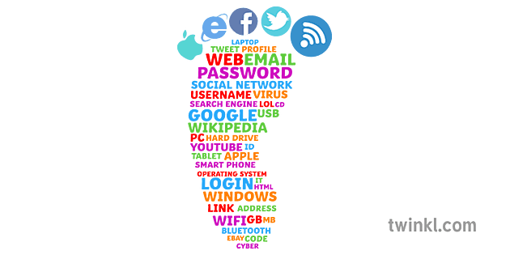

Digital literacy describes the set of skills and knowledge needed by today's students to successfully interact with and navigate the modern, digital world. From staying safe online, to understanding how the internet (and the web) work, these skills can only increase in scope as the world becomes increasingly dependent on computers, networks and interlocking software systems. And example of this is students knowing how to set up their own blog and what are and aren't good practices give today's students a head-start when it comes to managing their digital footprint. If they are to make informed choices about how they solve problems, students need to grasp some of the fundamentals which allow us to send messages to the other side of the world in the blink of an eye. The differences between the internet and the World Wide Web are also key.
Digital literacy refers to the ability to use digital technologies, such as computers, the internet, and mobile devices, to find, evaluate, and use information effectively. It is an essential skill for young people in today's digital world, and can help them to access a wealth of information and resources, communicate with others, and create and share their own content.
Some key aspects of digital literacy include:
1. Understanding how to use digital devices and technologies. This involves knowing how to turn on and operate a computer, how to use the internet, and how to use other digital tools, such as mobile phones, tablets, and apps.
2. Knowing how to search for and evaluate information online. This involves understanding how to use search engines, such as Google, to find information, and how to critically evaluate the quality and reliability of the information that you find.
3. Being able to communicate and collaborate with others online. This involves using email, instant messaging, and social media to communicate with others, as well as being able to work together on shared documents and projects using tools such as Google Docs or Dropbox.
4. Being able to create and share digital content. This involves being able to use tools such as word processing, photo editing, and video editing software to create and share your own content online, such as documents, presentations, photos, and videos.
5. Understanding the ethical and legal issues surrounding digital technologies. This involves being aware of issues such as copyright, privacy, and cyberbullying, and knowing how to behave responsibly online.
To develop digital literacy, it is important for young people to have access to a range of digital technologies and to be given opportunities to use them in a variety of contexts. This might include using computers and the internet in school, participating in online learning and collaborative projects, and using digital tools to explore their own interests and passions. Digital literacy is a crucial skill that will enable young people to take full advantage of the many opportunities and benefits of the digital world. By fostering digital literacy in young people, we can help them to become confident, capable, and responsible digital citizens.
Sources:
STEM Resources KS3 digital Literacy